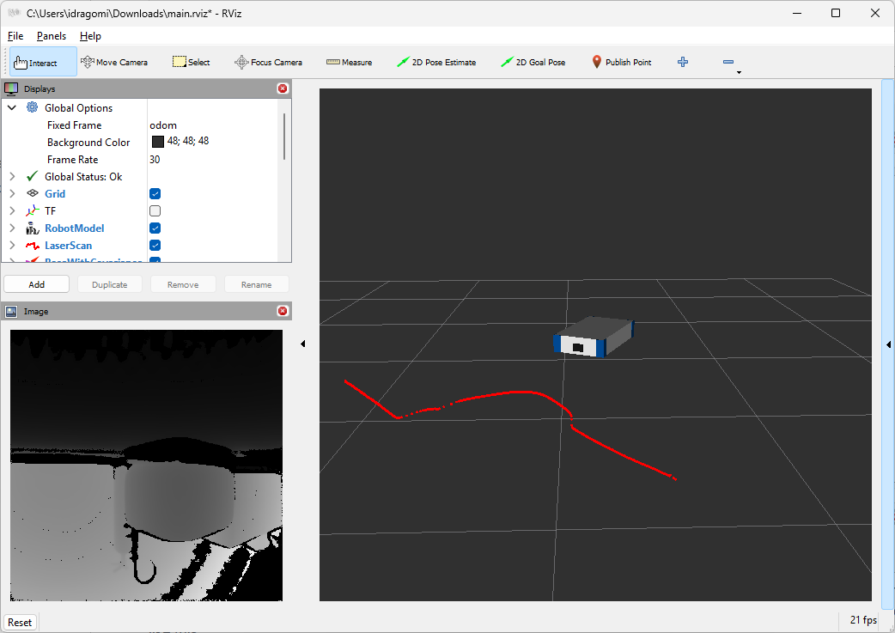

AD-R1M ROS 2 Getting Started
This guide covers setting up ROS 2 on your development PC to communicate with and visualize the AD-R1M robot.
Note
In the following sections, ad-r1m-123 represents the hostname of your robot. Replace 123 with your actual robot number, e.g. ad-r1m-6, ad-r1m-42, etc.
Host PC ROS 2 Installation
Pixi provides a quick, cross-platform way to install ROS 2 without modifying your system.
Install Pixi
In a terminal window, run:
curl -fsSL https://pixi.sh/install.sh | sh
Close and reopen the terminal window, or run source ~/.bashrc (or the rc of your shell of choice).
In a PowerShell window, run:
powershell -ExecutionPolicy Bypass -c "irm -useb https://pixi.sh/install.ps1 | iex"
Close and reopen the PowerShell window.
Create Pixi Workspace
mkdir pixiws && cd pixiws
pixi init -c robostack-humble -c conda-forge
pixi add ros-humble-desktop ros-humble-rmw-zenoh-cpp ros-humble-teleop-twist-keyboard
Configure Robot Connection
pixi workspace activation env set RMW_IMPLEMENTATION="rmw_zenoh_cpp"
pixi workspace activation env set ZENOH_CONFIG_OVERRIDE="connect/endpoints=['tcp/ad-r1m-123.local:7447'];mode='client'"
Note
Replace ad-r1m-123 with your robot’s hostname. You may run these commands again to switch robots.
Run Commands
pixi run ros2 topic list
Install ROS 2 Humble on Ubuntu 22.04 following the official installation guide.
Set Locale
locale # check for UTF-8
sudo apt update && sudo apt install locales
sudo locale-gen en_US en_US.UTF-8
sudo update-locale LC_ALL=en_US.UTF-8 LANG=en_US.UTF-8
export LANG=en_US.UTF-8
locale # verify settings
Setup Sources
# Enable Ubuntu Universe repository
sudo apt install software-properties-common
sudo add-apt-repository universe
# Add ROS 2 apt repository
sudo apt update && sudo apt install curl -y
export ROS_APT_SOURCE_VERSION=$(curl -s https://api.github.com/repos/ros-infrastructure/ros-apt-source/releases/latest | grep -F "tag_name" | awk -F\" '{print $4}')
curl -L -o /tmp/ros2-apt-source.deb "https://github.com/ros-infrastructure/ros-apt-source/releases/download/${ROS_APT_SOURCE_VERSION}/ros2-apt-source_${ROS_APT_SOURCE_VERSION}.$(. /etc/os-release && echo ${UBUNTU_CODENAME:-${VERSION_CODENAME}})_all.deb"
sudo dpkg -i /tmp/ros2-apt-source.deb
Install ROS 2 Humble
# Update apt cache
sudo apt update
sudo apt upgrade
# Install ROS 2 Humble Desktop (includes RViz, demos, tutorials)
sudo apt install -y ros-humble-desktop
# Source ROS 2
echo "source /opt/ros/humble/setup.bash" >> ~/.bashrc
source ~/.bashrc
Warning
Run sudo apt upgrade before installing ROS 2 to ensure systemd and udev-related packages are updated.
Install Zenoh RMW
The AD-R1M uses Zenoh middleware for ROS 2 communication. Install the Zenoh RMW implementation:
sudo apt update
sudo apt install ros-humble-rmw-zenoh-cpp
See rmw_zenoh documentation for more details.
Install Additional Tools (Optional)
# Visualization and debugging tools
sudo apt install -y ros-humble-rviz2 ros-humble-rqt ros-humble-rqt-common-plugins
# TF debugging
sudo apt install -y ros-humble-tf2-tools
# Nav2 tools (for visualization)
sudo apt install -y ros-humble-nav2-rviz-plugins
Communicating with the Robot
The AD-R1M uses Zenoh middleware for efficient, multi-robot ROS 2 communication.
Configure Connection
If you followed the Pixi installation, the connection is already configured. To change the robot you’re connecting to:
cd pixiws
pixi workspace activation env set ZENOH_CONFIG_OVERRIDE="connect/endpoints=['tcp/ad-r1m-123.local:7447'];mode='client'"
Verify Connection
Verify ROS 2 can see robot topics:
pixi run ros2 topic list
You should see topics like:
/imu- IMU sensor data/odom- Robot odometry/scan- Laser scan from ToF camera/cmd_vel- Velocity commands
# Echo sensor data
pixi run ros2 topic echo /imu --once
# Check topic frequency
pixi run ros2 topic hz /imu
Configure Connection
Set environment variables to connect to the robot:
# Set RMW implementation to Zenoh
export RMW_IMPLEMENTATION=rmw_zenoh_cpp
# Configure Zenoh to connect to robot (replace with actual hostname or IP)
export ROBOT_IP=ad-r1m-123.local
export ZENOH_CONFIG_OVERRIDE='connect/endpoints=["tcp/${ROBOT_IP}:7447"];mode="client"'
Verify Connection
Once configured, verify ROS 2 can see robot topics:
ros2 topic list
You should see topics like:
/imu- IMU sensor data/odom- Robot odometry/scan- Laser scan from ToF camera/cmd_vel- Velocity commands
# Echo sensor data
ros2 topic echo /imu --once
# Check topic frequency
ros2 topic hz /imu
Alternative: Fast-DDS with Discovery Server
If using Fast-DDS instead of Zenoh:
export RMW_IMPLEMENTATION=rmw_fastrtps_cpp
export ROS_DISCOVERY_SERVER=ad-r1m-123.local:11811
ros2 topic list
RViz Visualization
Launch RViz
In the AD-R1M repository folder, run:
cd pixiws
pixi run rviz2
Load RViz Configuration
Out of the box, RViz doesn’t display much. You can either:
Add displays manually:
RobotModel: Set to
/robot_descriptionTF: Enable to see transform tree
LaserScan: Set topic to
/scanMap: Set topic to
/map(when mapping or navigating)
Download a ready-made configuration:
Download ad_r1m_description/rviz/main.rviz and open it from RViz’s
File>Open Configmenu.
Launch RViz
Ensure environment is configured (see Communicating with the Robot above), then run:
ros2 run rviz2 rviz2
Load RViz Configuration
Out of the box, RViz doesn’t display much. You can either:
Add displays manually:
RobotModel: Set to
/robot_descriptionTF: Enable to see transform tree
LaserScan: Set topic to
/scanMap: Set topic to
/map(when mapping or navigating)
Download a ready-made configuration:
Download ad_r1m_description/rviz/main.rviz and open it from RViz’s
File>Open Configmenu.
{kind=link}

Tips and Best Practices
All commands below use pixi run from the pixiws directory.
Multi-Robot Setup
When working with multiple robots, each robot uses a namespace (e.g., ad_r1m_0, ad_r1m_1):
# View topics for specific robot
pixi run ros2 topic list | grep ad_r1m_0
# Echo namespaced topic
pixi run ros2 topic echo /ad_r1m_0/imu
Useful ROS 2 Commands
# List all nodes
pixi run ros2 node list
# Get info about a node
pixi run ros2 node info /motors/controller_manager
# List topics with types
pixi run ros2 topic list -t
# Record topics to bag file
pixi run ros2 bag record /imu /odom /scan -o sensor_data
# Play back recorded data
pixi run ros2 bag play sensor_data
# View TF tree (generates PDF)
pixi run ros2 run tf2_tools view_frames
Switching Robots
Update the configuration:
pixi workspace activation env set ZENOH_CONFIG_OVERRIDE="connect/endpoints=['tcp/ad-r1m-0.local:7447'];mode='client'"
Debugging Communication
If topics are not visible:
Verify network connectivity:
ping ad-r1m-123.localCheck Zenoh router is running on robot:
ssh analog@ad-r1m-123.local docker compose --env-file ad-r1m.env ps | grep zenoh
Check RMW configuration:
pixi run printenv | grep -E "RMW|ZENOH"
Try direct IP instead of hostname:
If mDNS resolution fails, find the robot’s IP and use it directly:
pixi workspace activation env set ZENOH_CONFIG_OVERRIDE="connect/endpoints=['tcp/192.168.1.100:7447'];mode='client'"
For more troubleshooting, see AD-R1M Troubleshooting.
Multi-Robot Setup
When working with multiple robots, each robot uses a namespace (e.g., ad_r1m_0, ad_r1m_1):
# View topics for specific robot
ros2 topic list | grep ad_r1m_0
# Echo namespaced topic
ros2 topic echo /ad_r1m_0/imu
Useful ROS 2 Commands
# List all nodes
ros2 node list
# Get info about a node
ros2 node info /motors/controller_manager
# List topics with types
ros2 topic list -t
# Record topics to bag file
ros2 bag record /imu /odom /scan -o sensor_data
# Play back recorded data
ros2 bag play sensor_data
# View TF tree (generates PDF)
ros2 run tf2_tools view_frames
Switching Robots
Add to your ~/.bashrc for convenience:
# ROS 2 setup
source /opt/ros/humble/setup.bash
# Function to connect to AD-R1M robot
connect_robot() {
local robot_num=${1:-0}
export RMW_IMPLEMENTATION=rmw_zenoh_cpp
export ROBOT_IP="ad-r1m-${robot_num}.local"
export ZENOH_CONFIG_OVERRIDE='connect/endpoints=["tcp/${ROBOT_IP}:7447"];mode="client"'
echo "Connected to ad-r1m-${robot_num}"
}
Usage:
connect_robot 0 # Connect to ad-r1m-0
ros2 topic list # View robot topics
Debugging Communication
If topics are not visible:
Verify network connectivity:
ping ad-r1m-123.localCheck Zenoh router is running on robot:
ssh analog@ad-r1m-123.local docker compose --env-file ad-r1m.env ps | grep zenoh
Check RMW configuration:
echo $RMW_IMPLEMENTATION echo $ZENOH_CONFIG_OVERRIDE
Try direct IP instead of hostname:
If mDNS resolution fails, find the robot’s IP and use it directly:
export ZENOH_CONFIG_OVERRIDE='connect/endpoints=["tcp/192.168.1.100:7447"];mode="client"'
For more troubleshooting, see AD-R1M Troubleshooting.